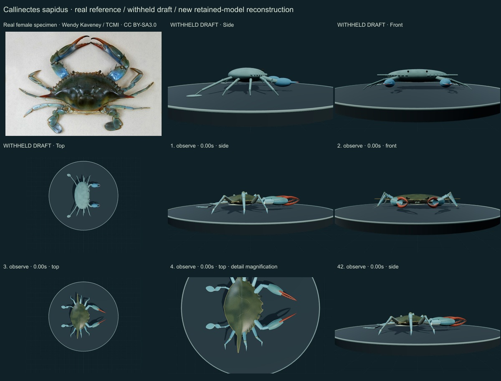
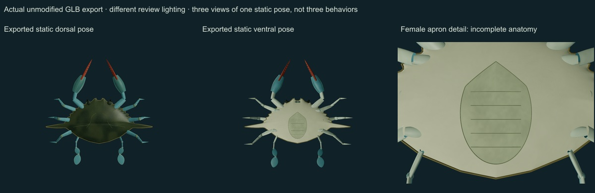
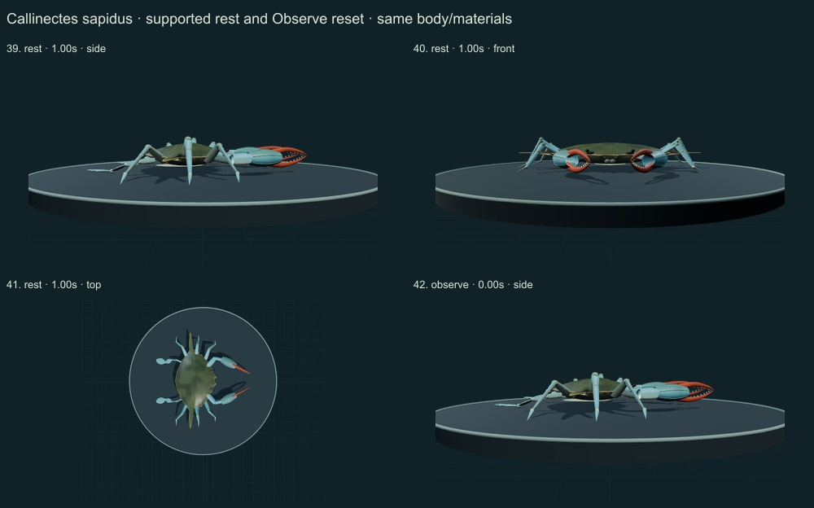
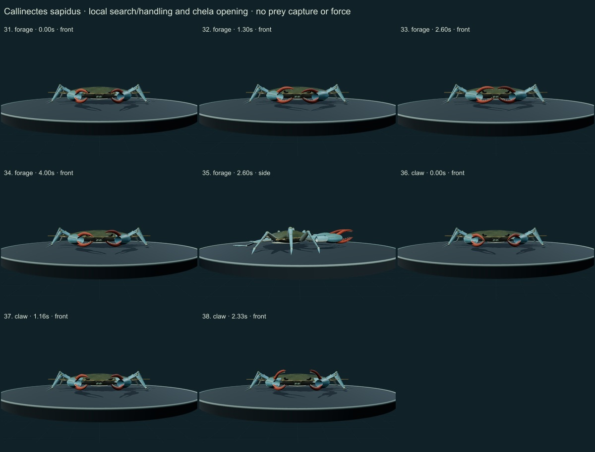
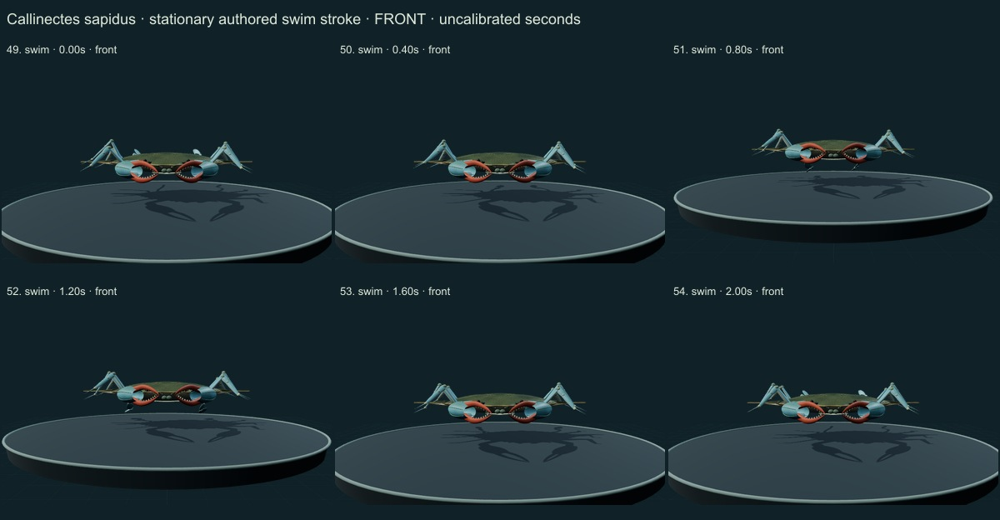
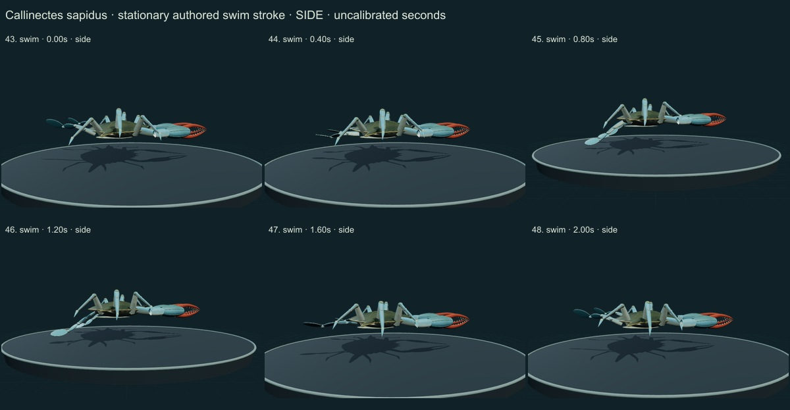
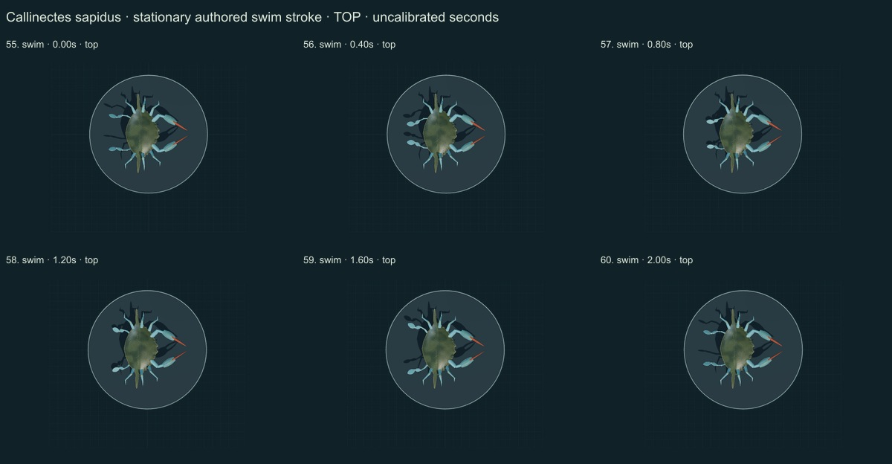
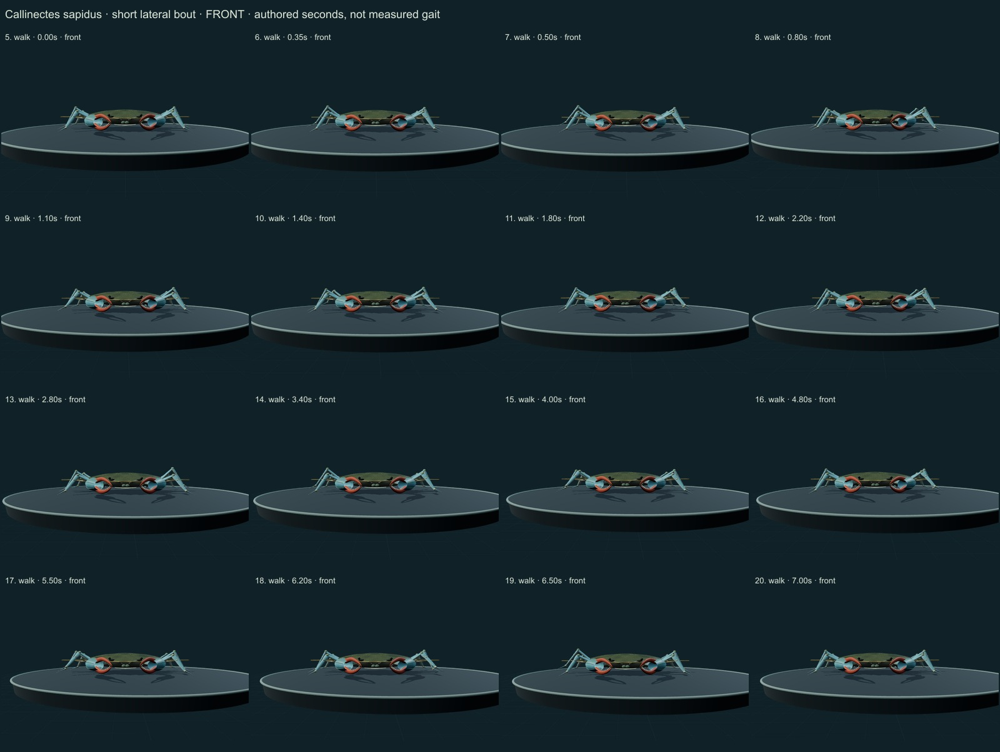
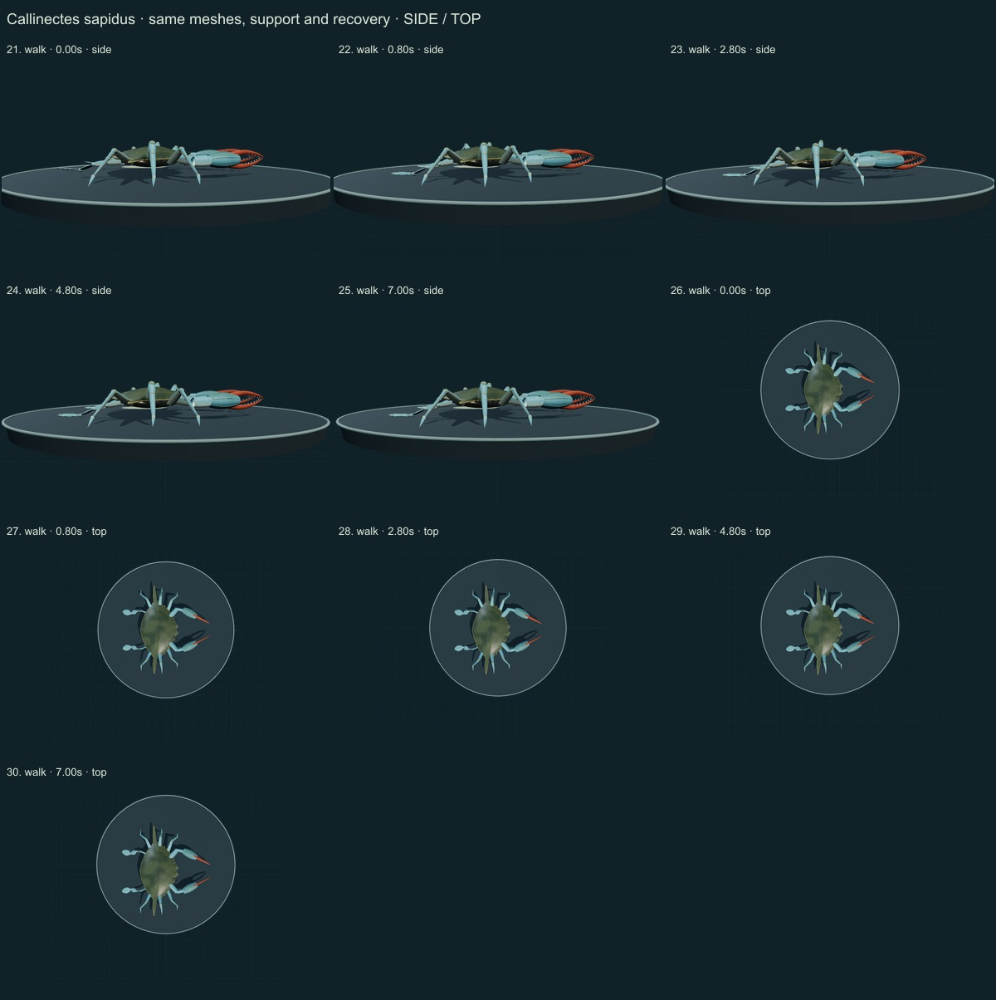

This release adds 1 species, reaching 253 / 550. Three of the fifty withheld drafts now have initial corrections; 47 remain withheld. 297 species remain to reach 550, including 250 without saved drafts. Previous shore-crab correction · Historical review.
Qualitative author comparison of60 actual final main-viewer WebGL2 states plus three views of one actually exported static pose on nine labelled sheets. The reference is the authentic Wendy Kaveney / The Children’s Museum of Indianapolis female specimen photograph; selected FAO species diagnosis and diagrams were actually viewed, alongside retained Smithsonian SERC morphology and scoped indexed primary abstracts. No raw morphometric coordinates, gait trajectories or physiological measurements were fitted.
“Atlantic blue crab” is a common-name variant; Smithsonian SERC uses “blue crab”. The SERC species account is not a collection determination of this photographed specimen. The GBIF accepted species-level name was checked directly on October 24. Occurrence records and introduced ranges do not define the native range.
Real reference: Wendy Kaveney / The Children’s Museum of Indianapolis, CC BY-SA3.0, female museum specimen 99.94.1. Resized/JPEG encoded without generative alteration; exact source/local hashes are retained. It is not a calibrated living-animal color reference.
FAO PDF page 9 / printed 351 was rendered and its selected diagnosis/diagrams viewed; the illustrations are linked, not reprinted. The Spirito1972 and Schmidt et al.2020 evidence is limited to public indexed abstracts; publisher full text was unavailable. Natural frequencies, joint axes and CT coordinates were not digitized or used as measurements.
Before: Repeated smooth oval crab body, small non-specific projections, thin rod-like walking limbs and two simple paddle tips; no species-specific ventral structure.
Changed: Broad low outline with nine authored anterolateral teeth per side including long lateral spines; two frontal cues; smaller eyes; elongated ridged chelae with selected female rust fingers; six plated pointed walking limbs and separate articulated P5 chains with flattened propodus and oval terminal blade. Broad female apron with narrowed telson cue and transverse creases.
Still approximate: Proportions and tooth placement are not specimen measurements. Mouthparts, ventral sternites, pleopods and gills remain incomplete. One selected female phenotype; no systematic age, moult or sexual dimorphism model. No inner distal carpal tooth has been copied from the shore crab.
Before: Nearly uniform green/blue material and generic body relief.
Changed: Original fine instanced granules, numerical chitin normal field, low olive mottling, blue plated limb surfaces, longitudinal palm ridge cues, rust female fingers and a pale ventral panel. Rim deformation was localized to remove visible radial flutes; the initial round paddle blades were elongated and pale front covers subdued.
Still approximate: The photograph is a preserved museum specimen, not a live calibrated material or 3D scan. Pigment, wear, transparency and roughness are authored. Fine tooth/finger granularity and segment seams remain stylized; this is not photoreal metrology.
Before: Simple chela gesture and fixed generic limbs, without species-specific walking/P5 mechanisms.
Changed: A seven-second authored lateral walking bout with planted stance, lifted recovery and final hold. Independent P5 joint chains provide a stationary sideways-swim stroke study; leading/trailing walking-leg roles differ. Same body/materials support local handling, claw opening, low quiet support and Observe reset. A contact-classification defect that marked barely raised toes as planted was corrected.
Still approximate: No imported joint trajectories, quantitative biological limits, calibrated gait timing, force, neural or fluid model. No calculated swim propulsion, prey contact, ingestion, sleep or male courtship. Three-dimensional biological articulation is more complex than the authored chains.
Actual side/front/top and selected detail views, walking, stationary swim strokes, local search/handling, chela opening, quiet rest and reset. The final sheet shows three views of one actual static GLB export under different lighting. These are qualitative comparisons, not independent observations or biological validation.
Render review led to fixes for radial shell flutes, round paddle tips, prominent pale mouth covers, the hidden female apron and contact classification. The screenshots retain subtle/stylized aspects for transparent review.









Targeted checks sample 285 walking states and all controls, checking fixed authored segment lengths, at least three walking support contacts, planted stance consistency, clearance, same geometry/materials, final hold and reset. These are software consistency checks, not biomechanical experiments.
The actual exported GLB retains its current pose, original normal field and instance extension; it has no animation clip. The open source controller supplies motion. Existing 252 species objects remain unchanged, including the original wolf/tiger assets and earlier plant corrections. Legacy Protista and Monera are reporting conveniences; modern lineage/domain data remain separate.
Per-frame findings, source scopes and checksums · Study the model